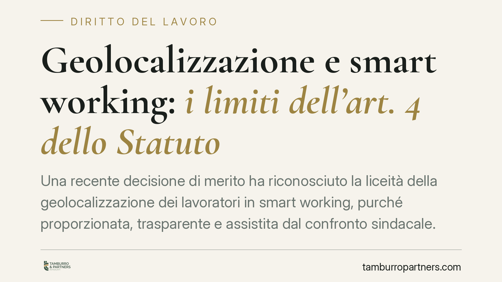

Geolocalizzazione e smart working: i limiti dell'art. 4 dello Statuto
Una recente decisione di merito ha riconosciuto la liceità della geolocalizzazione dei lavoratori in smart working, purché proporzionata, trasparente e assistita dal confronto sindacale. La pronuncia riapre il dibattito sul controllo a distanza e sul coordinamento tra Statuto dei lavoratori e disciplina privacy. Un tema delicato per le aziende che digitalizzano il lavoro da remoto.

Il caso
Secondo quanto riportato dalle fonti di settore, il Tribunale di Cosenza avrebbe annullato una sanzione irrogata dal Garante per la protezione dei dati personali a un'azienda che aveva attivato un sistema di geolocalizzazione dei dipendenti in smart working.
Gli estremi completi della pronuncia (sezione, numero e data della sentenza) non risultano al momento pubblicamente verificabili. Ne diamo perciò conto con cautela: si tratta di una decisione di merito, non di un principio consolidato della Corte di Cassazione, e come tale priva di efficacia vincolante generale.
Un dato procedurale è comunque utile: i provvedimenti del Garante sono impugnabili davanti al giudice ordinario nel termine di trenta giorni (art. 10, D.Lgs. 150/2011). Il ricorso all'autorità giudiziaria non è quindi un'anomalia, ma la via ordinaria di opposizione.
Inquadramento normativo
La geolocalizzazione dei dipendenti si colloca all'interno dell'art. 4 dello Statuto dei lavoratori (L. 300/1970), che disciplina i controlli a distanza.
Occorre distinguere due ipotesi. Il comma 2 riguarda gli "strumenti utilizzati dal lavoratore per rendere la prestazione": per questi non serve alcun accordo o autorizzazione preventiva. Il comma 1 riguarda invece gli impianti e gli strumenti da cui derivi anche solo la possibilità di controllo a distanza dell'attività: qui l'installazione è ammessa solo per esigenze organizzative, produttive, di sicurezza o di tutela del patrimonio, e previo accordo con le rappresentanze sindacali oppure, in mancanza, autorizzazione dell'Ispettorato territoriale del lavoro (ITL).
La geolocalizzazione, che tratta dati di posizione idonei a ricostruire spostamenti e presenze, ricade tipicamente nel comma 1, non nel comma 2. Non è cioè un banale strumento di lavoro: implica un potenziale controllo continuativo. Ne consegue che, salvo casi eccezionali, richiede accordo sindacale o autorizzazione ITL.
Il coordinamento con la disciplina privacy
L'art. 4, comma 3, dello Statuto richiama espressamente il rispetto della normativa sulla protezione dei dati. Il quadro va quindi letto insieme al Regolamento (UE) 2016/679 (GDPR).
Rilevano in particolare l'art. 88, che consente agli Stati membri regole specifiche per il trattamento dei dati nel rapporto di lavoro, e l'art. 5, che impone i principi di minimizzazione, proporzionalità e limitazione delle finalità. La liceità del trattamento presuppone inoltre l'informativa (artt. 13-14) e, per sistemi di questo tipo, una valutazione d'impatto sulla protezione dei dati (art. 35).
Il provvedimento sanzionatorio del Garante e la successiva pronuncia del giudice ordinario si muovono su questo doppio binario: il rispetto formale della procedura dell'art. 4 non basta se manca la proporzionalità sostanziale del trattamento; e viceversa, un sistema proporzionato ma privo di base procedurale resta illegittimo.
Implicazioni pratiche
Per le imprese che gestiscono personale da remoto, il messaggio è netto: la geolocalizzazione non è vietata in sé, ma la sua legittimità poggia su tre pilastri simultanei.
- Proporzionalità: il tracciamento deve essere limitato a quanto strettamente necessario, evitando il monitoraggio continuo e ingiustificato.
- Trasparenza: il lavoratore deve conoscere modalità, finalità e tempi di conservazione dei dati.
- Coinvolgimento sindacale: l'accordo con le rappresentanze o l'autorizzazione dell'ITL costituisce presupposto di liceità, non un adempimento facoltativo.
Una singola pronuncia di merito favorevole all'azienda non trasforma questi requisiti in optional. Anzi: conferma che la valutazione è casistica e che l'assenza di uno dei tre elementi espone a contestazioni.
Cosa fare in concreto
- Mappa le finalità del sistema di geolocalizzazione e verifica che siano riconducibili alle esigenze tassative del comma 1 dell'art. 4.
- Attiva la procedura corretta: accordo sindacale o, in subordine, richiesta di autorizzazione all'ITL competente, prima dell'avvio del trattamento.
- Redigi un'informativa chiara e una valutazione d'impatto (DPIA), documentando le scelte di minimizzazione dei dati.
- Configura il sistema in modo che il tracciamento sia disattivabile fuori dall'orario e circoscritto alle sole finalità dichiarate.
- Conserva la documentazione a supporto: in caso di ispezione o contenzioso, l'onere della prova sulla liceità grava sul datore.
È opportuna, in ogni caso, una valutazione preventiva del singolo sistema alla luce della configurazione tecnica e del contesto organizzativo.
Disclaimer
Contributo informativo a cura di Tamburro & Partners Avvocati - Avv. Giuseppe Tamburro. Non costituisce parere legale.
Ogni storia di lavoro ha i suoi tempi.
Se gestisci HR e vuoi un confronto su contenzioso, ispezioni o licenziamenti, scrivi allo studio. Ti rispondiamo entro un giorno lavorativo.